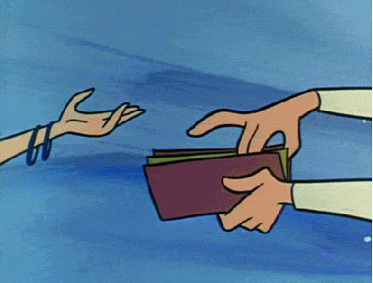
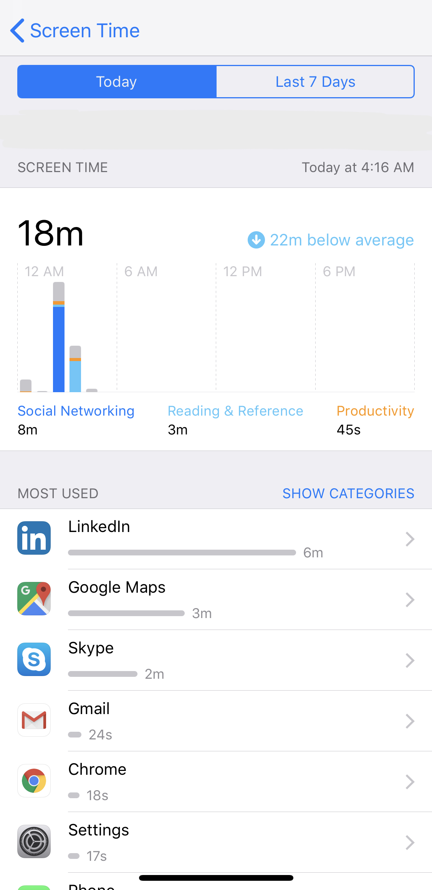

name: introduction class: middle, center # Let's Detox our data ##### For Mozilla Sri Lanka ##### By [Lahiru Himesh Madusanka](https://sdglhm.com/) --- name: about_me class: center # Lahiru Himesh Madusanka Mozilla Representative | IT consultant --- name: what_is_detox class: center, middle # What is Detoxing our data 🥤 #### A process which extensively focuses on keeping your privacy in check with the increasing number of web services in the world. --- name: how_mozilla_relate class: center, middle # What is the relation of Mozilla with data detox? 🤔 #### About the unhealthy relationship 🤝 with your data --- name: workout_5_days class: center, middle # Workout plan for 5 steps 🏋️♂️ #### or... 5 stages of data detoxing (grief?) --- name: stage_1 class: center, middle # Stage 1 - Discovery 🧐 #### get a fined tooth comb and analyze through your data --- name: stage_1_video class: center, middle # Found anything yet? <video width="" height="" controls> <source src="./assets/SPACEBALLS - _Comb the Desert_ - HD (1987) 9.4s - 25.7s (bYge6ehH9fo).mp4" type="video/mp4"> </video> --- name: discover_yourself class: center, middle ## Search for your name online 🔍 <img src="./assets/Google_2015_logo.svg" alt="Google Logo 2015" width="10%"><br> <img src="./assets/Screen Shot 2019-07-23 at 3.14.59 AM.png" alt="Lahiru Himesh Madusanka on Google" srcset="" width="70%" height="70%"> --- name: discover_yourself_2 class: center, middle <br> <img src="./assets/Screen Shot 2019-07-23 at 3.21.58 AM.png" alt="Lahiru Himesh Madusanka on DuckDuckGo" srcset="" width="70%" height="70%"> --- name: collected_data class: center, middle # Takeout your lunch 🍜 https://google.com/takeout <br> --- name: being_social class: center, middle # Stage 2 - Being Social 🥳 ### Social media creates a lots of digital information --- name: reduce_footprint class: center, middle # Reduce your social media data footprint 👣 --- name: shopping_spree class: center, middle # Stage 3 - Let's go on a Shopping Spree 🛍  --- name: shopping_habits class: center, middle # How many of you shop online 🌏 ### <i>Intention towards Online Shopping Via Social Media<br>Networks: Perspective of Young Generations in the Eastern Parts of Sri Lanka</i> <br> <small> Ahamed Lebbe Mohamed Ayoobkhan </small><br> <a href="http://www.seu.ac.lk/jisit/publication/v1n2/Paper3.pdf" target="_blank">http://www.seu.ac.lk/jisit/publication/v1n2/Paper3.pdf</a> --- name: internet_usage class: center, middle # Internet usage increase in Sri Lanka 🇱🇰 <img src="./assets/Screen Shot 2019-07-23 at 3.49.11 AM.png" alt="Internet usage" srcset="" class=""> --- name: clensing_your_apps class: center, middle # Stage 4 - Declutter your Apps on mobile 🧹 ### Average smartphone user opens ~30 apps each month <small> <a href="https://buildfire.com/app-statistics/">Source: https://buildfire.com/app-statistics/</a> </small> --- name: reduce_access class: middle, center # Reduce number of apps 🗑 #### Use inbuilt features like screen time  --- name: stage_5 class: middle, center # Stage 5 - Fake news 💇♂️ ### Finding your truth online --- name: fake_news_category class: middle, center # Identify fake news online ### 1. Mis-Information ### 2. Dis-Information ### 3. Mal-Information --- name: fake_news_mis class: middle, center # 1. Mis-Information 🤡 ### Information goes around online without any harmful intent --- name: fake_news_dis class: middle, center # 2. Dis-Information 👺 ### Curated false information shared with harmful intent --- name: fake_news_mal class: middle, center # 3. Mal-Information 🔫 ### Information based on reality, used to harm someone --- name: q_n_a class: middle, center # Q﹠A time --- name: thank_you class: middle, center # Thank you ### Lahiru Himesh Madusanka